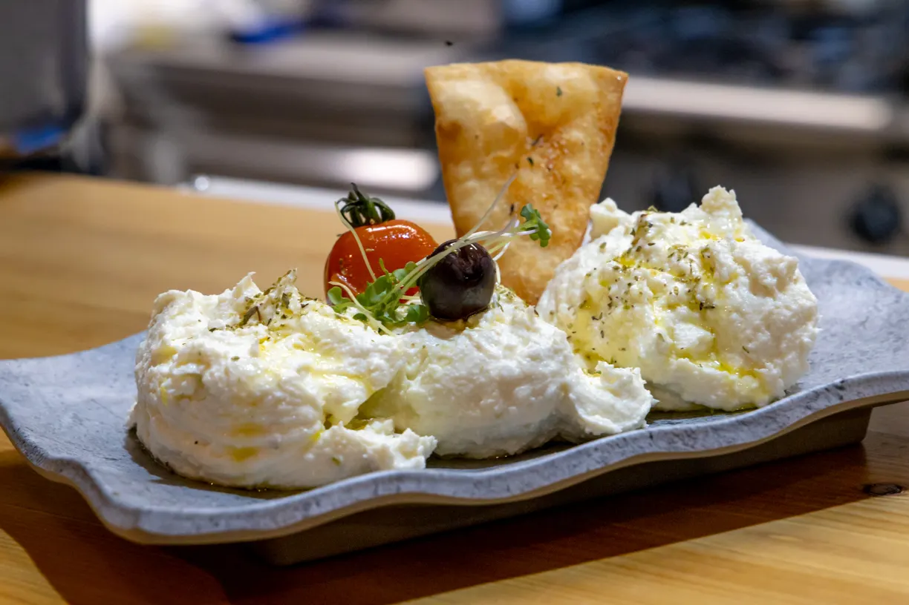
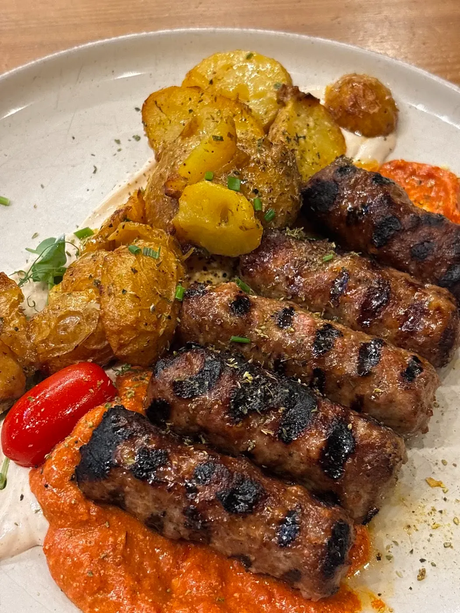
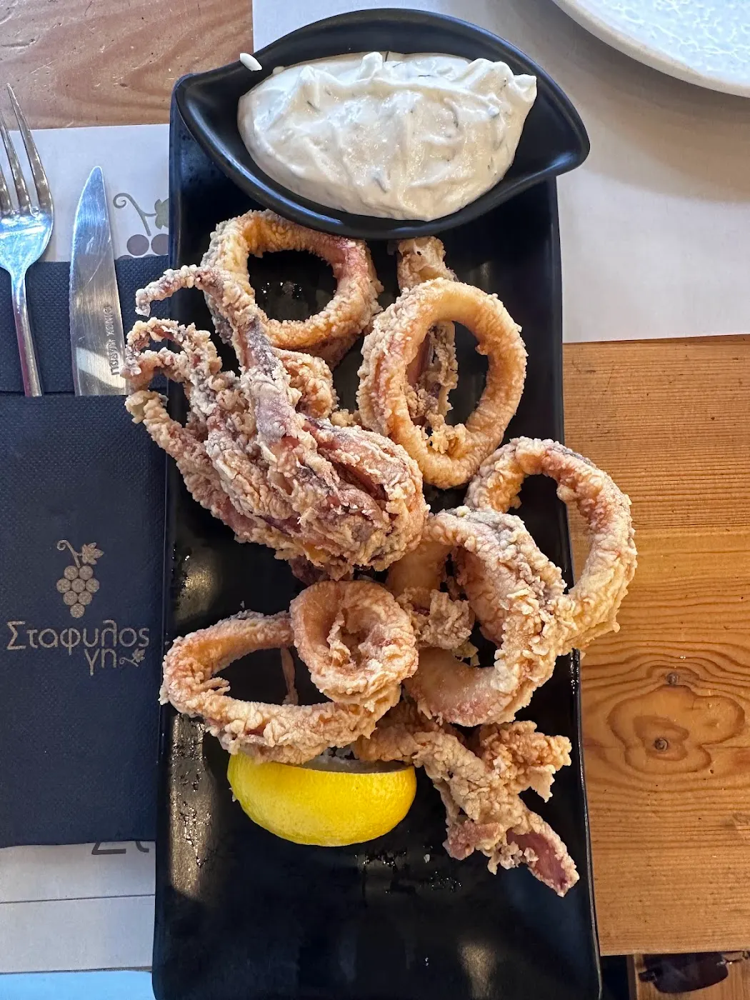
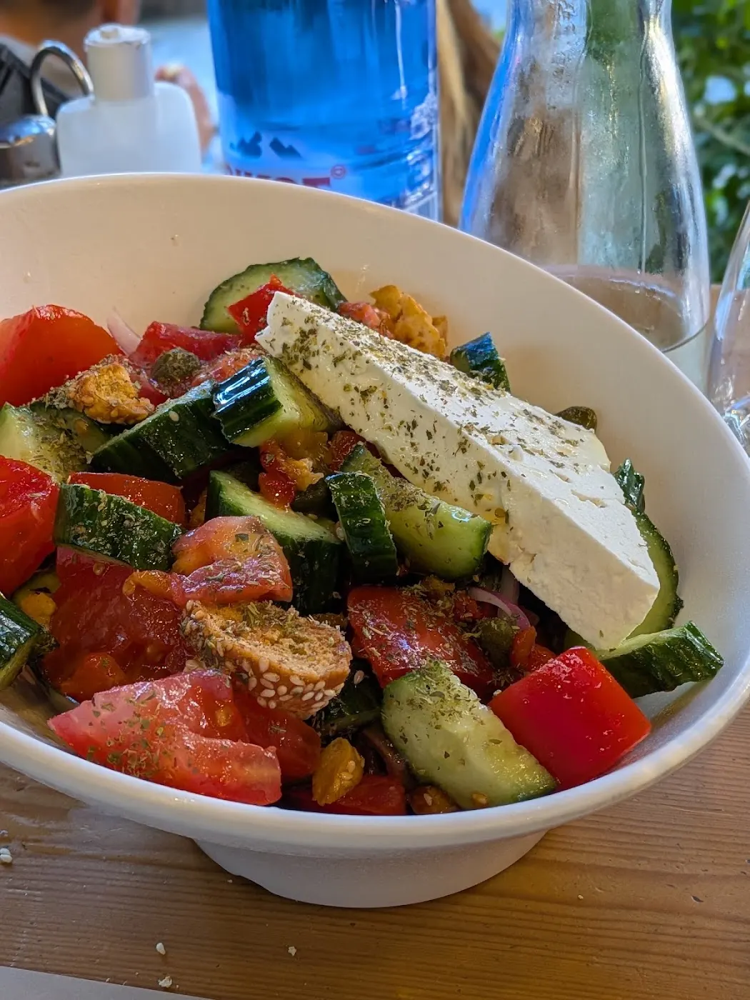
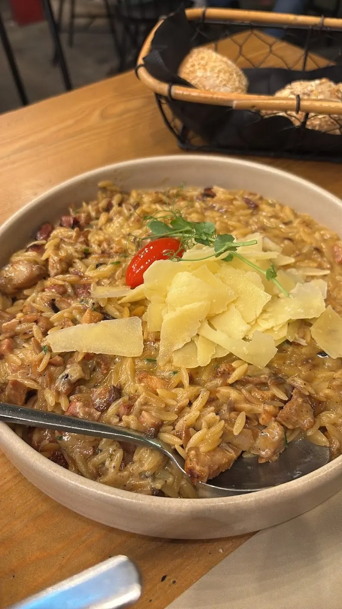
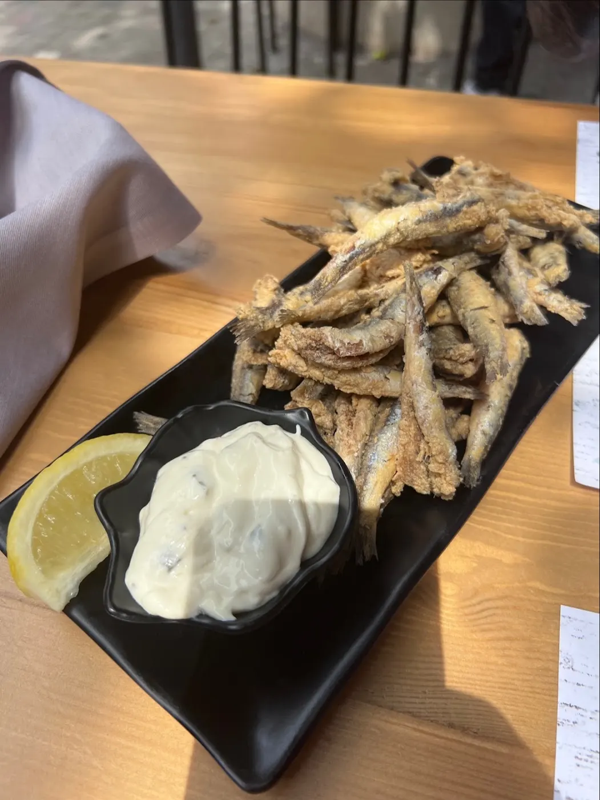
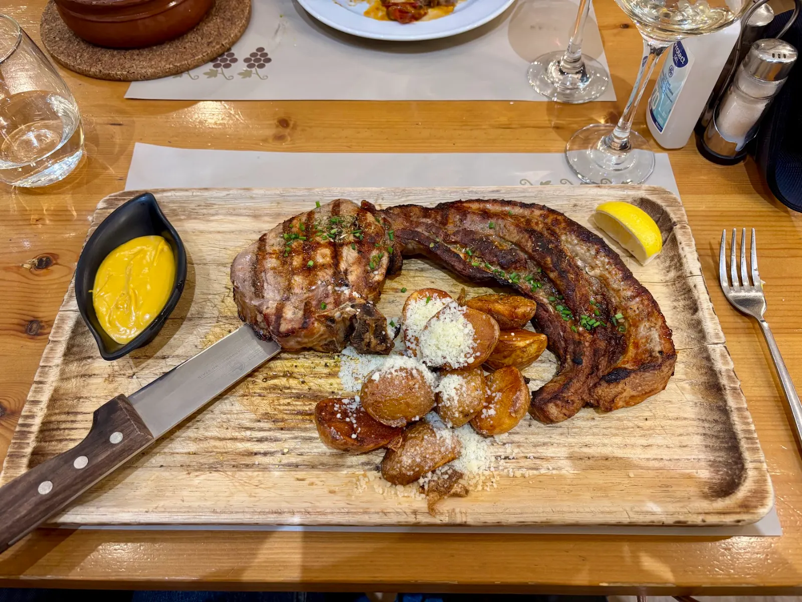
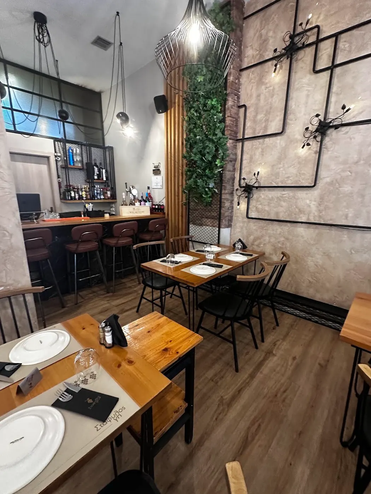

Kebab from the grill
With charred tomato and roast potatoes.

Grilled meats, Greek meze and wine from the land.
Στάφυλος Γη · Taverna
A warm, well-kept taverna in the centre of Thessaloniki. Kebab off the grill, fresh fish, crispy meze and a long list of Greek wines and tsipouro.
“Very kind, welcoming, and always smiling.”
From the kitchen

With charred tomato and roast potatoes.

Olive oil, tomato, warm pita.

Fried to order, lemon on the side.
The place



What guests say
“The food is amazing and everything is delicious. The place itself is clean and well decorated.”Guest review
“We found this lovely meat restaurant on Google and it turned out to be a great choice.”Guest review
“The menu has quite a few choices, including fresh fish — we opted for traditional Greek dishes.”Guest review
Visit us
